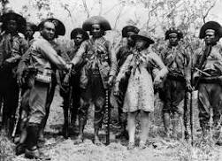

Escola
Doutor Otto Feuerschuette

Conheca a historia do movimento cangaceiro que marcou a história do Brasil
Cangaço
Aqui a baixo segue alguns links para a historia do cangaço,
aproveite linha do tempo para descobrir quais misterios está historia conta.

Em cada texto onde será apresentado os temas, junto terão links para videos e matérias na Web